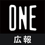

“視聴者の共感を捉えた物語”を動画という形で世に送り出しているワンメディア。 STORY MAKERS Interviewでは、ブランドとターゲットの接点を作り出すまでの過程や共感ポイントを捉えた物語の発掘についてメンバーインタビューを通してご紹介します。
“クリエイターとキャストのコラボレーションで新しい動画表現をつくる” LINE NEWS「VISION」

昨年6月からLINEの運営するニュースサービス「LINE NEWS」において、動画プロジェクト「VISION」が提供開始となりました。ワンメディアもコンテンツをプロデュースし、提供していますが、まずLINE NEWS「VISION」の概要や特徴を教えてください！
LINE NEWS「VISION」は、LINEアプリのニュースタブ内に掲出される縦型動画コンテンツです。
“クリエイターとキャストのコラボレーションで新しい動画表現をつくる” というコンセプトのもと、ワンメディアも幅広いジャンルの動画コンテンツをプロデュースしています！

LINE NEWS「VISION」のコンテンツには、主に5つの特徴があります。
①LINE NEWS面での独占配信
②スマホ視聴を加味した縦型動画コンテンツ
③1シリーズ複数エピソード構成
④1話2〜5分の短尺動画
⑤LINE公式アカウントとの連携（コンテンツごとにオフィシャルアカウントができます）
1シリーズ複数エピソード構成とはどういうことですか？
ワンメディアが日々、制作しているクライアント様のコンテンツは1プロジェクトにつき、基本的に2〜3本です。それに対してLINE NEWS「VISION」で展開しているコンテンツはシリーズものなので、10話ほどで構成されています。
ファンがキャストをどれだけ愛しているか、というエンパワーメントを最大化させる仕掛け
ワンメディアはLINE NEWS「VISION」にコンテンツプロデュースという立ち位置で関わっていますよね。キャスト×クリエイターの掛け合わせで生まれる化学反応で魅せることをテーマにしていますが、キャスティングや企画部分において、ワンメディアが重要視しているポイントを教えてください。
キャストをファンの人達がどれだけ愛しているか、というエンパワーメントの部分を重要視しています。ここだけ切り取ってしまうとキャストにフォロワーがどれだけいるか・SNS発信がアクティブか、という風に捉えられがちですが、（もちろん数も大事ですが）企画を通じてどのくらい人が動くかを私たちは重要視していて、ファンとして応援しているキャストのコンテンツを見て、「応援したい！」と思う層がどれだけいるのか、というのか大事だと思っています。
そのためには、紐付いて企画がとても大事です。ファンはキャストの動画とかSNSを隈無くみているはず。企画を通して、キャストの新しい面や意外な面が描かれている作品の方がファンの人達も喜んでくれると思うんです。そこにワンメディアがプロデュースという立ち位置で入る意味がある思っています。この人が出てるから見ようというのは当たり前で。キャストの持つ文脈を意識しつつ “新たな側面”がコンテンツに反映できているか、という部分はとても意識しています。
大好きな人の見たことのない面を見れることは、たしかにファンとして嬉しいし、自分だけでなく、沢山の人に見てもらいたいと思いますよね。ちなみに、キャスティングと企画立案はどちらが先行しているのでしょうか？
まずはワンメディアがクリエイターをリサーチしてお声がけをします。その後、クリエイターから企画を提出してもらい、キャストをキャスティングするという流れですね。
そうですね。まずはクリエイター選定。次にクリエイターに何を表現したいのかという企画出しをしてもらいます。クリエイター×キャストの化学反応がテーマなので、クリエイターには企画出しの際にあらかじめキャスト候補出しをお願いしています。その中で知名度に関わらず、キャストが持つ文脈やコミュニティが企画とマッチしているかを考え、ワンメディアから出演オファーを出します。ほかにも社内のLINE NEWS「VISION」チームで大枠をつくり、この人とこの人でこういう企画やったらおもしろそう！みたいな形で企画にすることもあります。
クリエイターはどのようにリサーチしているんですか？
チームメンバーがそれぞれめちゃめちゃリサーチをする時もあれば、クリショア（映像クリエイターのポートフォリオ共有&検索プラットフォーム）などを見て、お声がけすることもあります。
過去作品を見てもLINE NEWS「VISION」のクリエイターは、映画監督や脚本家、モーショングラファーなど様々な映像・動画クリエイターの方がいますよね。それぞれの世界観があって広報としては毎回楽しくリリース書いてます！ちなみに、クリエイターが提案する企画に関して、ワンメディアはどの程度絡めるのでしょうか？
クリエイターの意見や世界観は尊重しつつ、どうしたら沢山の人に見てもらえるか？という部分を一緒に考えています。コンテンツの配信面がLINEアプリのニュースタブなので、そこで流すにあたり問題がない内容か、という部分は細く見ています。
独りよがりではなく、いかに視聴者が一緒になって楽しめて、心が揺さぶられるか、そこにワンメディアがプロデュースを行う意味がある
LINE NEWS「VISION」のコンテンツをワンメディアがプロデュースする意味はなんでしょうか？
LINE NEWS「VISION」に限らず、ソーシャルエンタメ動画のコンテンツスタジオとして、ワンメディアは様々な動画コンテンツをプロデュースしています。ワンメディアの動画を見てくれている人は分かるかもしれませんが、私達は「有名な人を出せばなんとなかなる！」というコンテンツをづくりはしていません。クライアントコンテンツにおいてもそうですが、私達が重要視しているのはキャストとコンテンツの文脈がかけ離れてないか、そして独りよがりではなく、視聴者が一緒になって楽しめて、心が揺さぶられるかということ。
そうですね。私はワンメディアがプロデュースする意味を一言でいうと “より多くの人にコンテンツを見てもらうため”かなと思います。クリエイターの表現したい世界観に対して、ワンメディアが「だったらもっとこういうキャストを起用しよう」「ここの表現を少しこう変えてみよう」など壁打ち相手になることで視聴者の入り口を広くできると思っています。私達もクリエイターの作ったコンテンツを愛しているので、多くの人に届けたいという気持ちはとても強いです。
創業時からワンメディアのコンテンツの軸になっている部分が活きているということですね！
LINE NEWS「VISION」で配信するにあたり、スマホファーストな動画の視聴態度を考えるとコンテンツの頭に「こんなおもしろいものがこのコンテンツで見れるのか！」という視聴者の期待値を上げることが大事です。
クリエイターも様々な映像・動画ジャンルから参加いただいているので、それぞれ表現や作り方が違う。その中で創業時からソーシャルエンタメ動画を制作してきた私達の知見を提供してスマホに適したコンテンツの見せ方を加え、見られるコンテンツにできるので、そこが私達がプロデュースとして入る意味なのかなと。
配信中の『つながりたくて、嘘をつく』は、毎コンテンツのラストにゾクゾクして続きがみたくなる仕掛けがありますよね。あの感じは企画が上がってきた段階からそのような構成だったんですか？
『つながりたくて、嘘をつく』は初めて監督の柳さんとプロデューサーの浦野さんとお会いした時にスマホ視聴を加味すると、動画の冒頭でのユーザーの期待値作りとシリーズとして次が見たくなるような盛り上がりの作り方が重要であることをお話していました。なので、あがってきた企画や台本に関してはほぼフィードバックしてないです！
ワンメディアのソーシャルエンタメコンテンツに関するノウハウが追加されることで、より多くの視聴者に見てもらうことができる、ということですね。台本・動画編集の確認などどのくらいワンメディアが介入しているんですか？
配信面であるLINEアプリのニュースタブに掲載できる内容かという部分の確認を含めて、企画から台本、動画データはすべてLINEさんへ納品する前に一通りチェックします。なので、過度なホラー演出や暴力的な言葉遣いなどはできるだけマイルドに、誰が見ても不快感を持たないようフィードバックすることはあります。あとは、初めて動画を見る人が見やすく・理解しやすいようにテロップや構成についてもクリエイターさんと相談しながら進めています。
LINE NEWS「VISION」におけるワンメディアの仕事は企画から制作までの部分です。なので、知らない人が見た時にちゃんと楽しめるかという部分を考えながら、プロデュースという立場でクリエイターの意見を尊重しつつ、フィードバックをしていますね。
LINE NEWS「VISION」おすすめシリーズをまるっと紹介！
これは人気作だった…！という作品と視聴者の反応を教えてください！
特に人気だったのは『二人合わせてパーパーです』・『旅するクリームソーダ』・『つながりたくて、嘘をつく』ですかね。3作品はLINEアカウントの友達登録者がとても伸びていました。
SNSでのファンの盛り上がりでいうと『年下日記online』はコンテンツが配信されると、毎回即座にTwitterで50件以上の投稿が集まっています。
『年下日記online』は特に視聴者がアクティブですよね。ファンの皆さんに届いていることが目に見えてわかって、私もSNSを見てニヤニヤしてます。
では最後に、今までにワンメディアがプロデュースしたLINE NEWS「VISION」コンテンツでおすすめのシリーズを教えてください！
『つながりたくて、嘘をつく』です！私の周りでもすごく人気があるんです。
縦型動画のドラマなので新感覚でキャストとの距離感が近く、没入できます。それにドラマ内でコミュニケーションアプリのトーク画面でやりとりが進行するシーンが何回かあるのですが、普段のコミュニケーションに似ていて、そこがまたリアルに感じれて面白いです。あと動画内で流れるBGMもとっても素敵なので、最後までぜひ見てみてください！

私は『旅するクリームソーダ』ですね。元々、キャストであるクリームソーダ職人のtsunekawaさんのファンだったんです。普段見ていた写真だけのクリームソーダが動画という形になったらどんな風に見えるのかというのは企画段階からワクワクしていました。クリームソーダって縦に長いので、スマホの視聴環境にも合っているし、tsunekawaさんの作品の世界観を担保しつつ、新しいクリームソーダの可能性を見せれたのではないかなと思います！
▼『旅するクリームソーダ』

んんんん！！！どれもおすすめすぎるので選べない…！あえてあげるなら、恐怖心に押しつぶされそうになった『新学奇の記録』ですかね。深夜の廃校で撮影をしていて、撮影の立ち会いで参加していたのですが本当に怖かった…。でもプロデューサーである私が怯えてたらキャストも怖くなってしまうし、恐怖心を隠して平然を装うのが大変だった…。ホラーだけど面白いシリーズなのでこの夏、ヒヤッとするべくぜひみてください！！
▼『新学奇の記録』

【LINE NEWS「VISION」ワンメディアプロデュース 作品一覧】
※バックナンバーから動画が見れますっ
■駒木根葵汰×山浦未陽『写す、綴る、ハタチ。』
俳優としてさらなる飛躍を目指す駒木根葵汰が自身の新たな表現力の可能性を求めて行うフォトエッセイ制作。制作の過程で見えてくるさまざまな姿やフォトエッセイをもとに語られる駒木根葵汰の今の思いを映すドキュメンタリー企画。
■ウエキトシヒロ×堀田陽子『いただきますは、いっしょに。』
家メシの可能性を広げ、ポストコロナ時代の暮らしを豊かにするヒントを個性溢れる食のプロたちと語る、新感覚の料理番組。
■タマキ×中西綾『ティルドーンサーカス』
かわいくてどこかおかしなサーカス団員たちに、主人公のフィーテッドが振り回されるコメディ。
■田島芽瑠(HKT48)×岡太地『年下日記online』
キラキラ恋愛映画あるあるや演技力チャレンジなどで描かれる、笑って泣ける撮影物語。
■小野友樹×佐木郁『スクリーンポップタイム』
テレビ電話でスクリーン越しに3人のイケメンに言い寄られる青春ラブストーリー。
■笠松将×柳明菜『つながりたくて、嘘をつく』
情報が過剰に行き交う中で、見失いがちな「本当の自分」「信じるべきもの」は何か？この作品を通して私たち自身に問いかける。
■新しい学校のリーダーズ×谷口猛『新学奇の記録』
とある廃校舎でインタビュー番組を収録中、たび重なる怪奇現象に見舞われた新しい学校のリーダーズと撮影クルー。彼らを待ち受けていたものは一体…。
■AK-69×小林勇貴『AK学園』
タレントグラドルYouTuber、高校生格闘家、元世界チャンピオンのプロボクサー、元アイドル、パーソナルトレーナー、ジェンダーレス系男子とのぶつかり合いの中で、超一流ラッパーAK-69の素顔が暴かれていく…！
■さいあくななちゃん×たけうちんぐ『ロック(69)秒の芸術』
誰にだって芸術はできるし、それを届けられる。衝動の矛先はいつだって目の前にある。今日今すぐにでも始められることを「ロック秒」で伝えるドキュメンタリー。
■tsunekawa×加藤綾佳『旅するクリームソーダ』
フォトジェニックなクリームソーダのレシピを公開するだけでなくtsunekawaさんのの活動を色彩豊かな映像で切り取るドキュメンタリー。
■吉村界人×アベラヒデノブ『大晦日になにやってんだよ』
「映画撮るぞ！」のLINEで始まった、2人の映画人の映画制作を追ったドキュメンタリー。
■チョーヒカル×市川稜『超動物旅』
消えかけている動物たちの生態を、想像を超える表現で人の体に描き残していくチョーヒカル。彼女がボディペイントに込めた思いとは一体何なのかを追うドキュメンタリー。
■葉媚×村田唯『よーびとおいしい台湾失恋旅。』
台湾旅を通じて食、ファッション、異文化、恋愛観など、台湾の面白さに引き込まれながら、葉媚の魅力と自分の人生を垣間見るフェイクドキュメンタリー。
■芋生悠×岡太地『年上日記.』
演技者が何を感じながら演技をするのかを実際に話し合い作り上げるメイキングパートと、男女の日々を描いたラブストーリーパートで進行していく新感覚ドラマ。
■リリースペイシー×宮嶋風花『Lily’s Radio!』
現代の若者のリアルな悩みを、宇宙規模で解決！
さぁ、あなたも一緒に、プリプリ宇宙アドベンチャーへ！スーパーハイパークレイジーパワー！
■吉澤嘉代子×松永つぐみ『 “夢映し”』
吉澤嘉代子の記録した夢を題材に、多くの人にとって様々な解釈ができる作品。
■Mega Shinnosuke×マルルーン『ミュージックビデオをつくろう』
普段から仲の良い10代のコンビが、ミュージックビデオを制作するまでの過程を描いたドキュメンタリー。
■パーパー×西本達哉『二人合わせてパーパーです』
あいなぷぅとの絆を取り戻すべく、「三人合わせて星野です」こと星野が身の回りにある＜仲直りの方法＞を試したり＜相方を変更＞してみたり…趣向を凝らしてコンビの絆修復を試みる、お笑いドキュメンタリー。
■安井竜樹×坪井隆寛『ゲリラ・ガーデニング・トーキョー』
様々な文化や人種が混ざり合う東京の路上が舞台。街から受ける印象をテーマにゲリラガーデニングで作品を制作する過程を描いたドキュメンタリー。
■GOMESS×たけうちんぐ『ONE RAP, ONE CAM』
GOMESSのフリースタイルラップから生まれる言葉の即興性を、ライブ映像の撮影で培ったワンカメラのリアリティある映像で描くシリーズ。
■ゆうこす×のむらなお『すがもとゆうこす日記』
同世代で異なる目線を持つ、のむらなおが友人目線のドキュメントタッチで描くことで、今まで知ることのなかったゆうこすの側面が浮かび上がる…？
■印度カリー子×村松優翔 / 渡邉翼『カレーに恋する女の子』
料理ハウツーにストーリー性を持たせ、印度カリー子のライフスタイルをポップ&キュートに切り取り、スパイス料理の魅力を伝えるシリーズ。
宮里 菜津子／チーフプロデューサー
2018年にワンメディアへ入社。プロダクション事業部のチーフプロデューサーとしてLINE NEWS「VISION」をはじめとする様々なプロジェクトを統括。
登川 奈緒美／プロデューサー
2018年にワンメディアへ入社。プロダクション事業部のプロデューサーを務める。直近では前澤友作氏 YouTubeチャンネル「Yusaku Maezawaチャンネル」も手掛けている。
久保 愛／プロダクションマネージャー
2020年にワンメディアへ入社。プロダクション事業部のプロダクションマネージャーを務める。LINE NEWS「VISION」をはじめ、タクシーサイネージメディア「Tokyo Prime」等を担当。
ワンメディア株式会社では
一緒に働く仲間を募集しています
-
- Strategic Planner
-
ストラテジックプランナー
-
- Producer
-
動画プロデューサー


Back to Interview Index